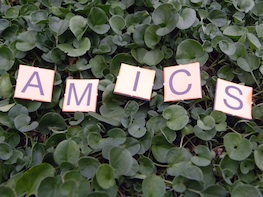

Vet aquí que una vegada,fa molt i molt temps la lletra A estava molt avorrida, sola i trista.
De sobte va trobar una altra lletra era la M, tenia uns braços llargs que feien abraçades ensucrades! i a més a més quan lletra M t’agafava suaument feia un so com aquest: -mmmmm! (els nens imiten la M)
La lletra A ja no es trobava tant sola, ni tant trista.
Un dia tot passejant, es van trobar una lletra molt i molt prima i molt llargaruda! era la I.
Aquesta lletra era molt divertida, dons quan reia sonava així -jijijiji (els nens imiten amb l’ajuda de la monitora el so de les rialles amb la a,e,i,o,u).
Que bé que estaven les tres lletres, -com més colla som, més ens divertim! van pensar.
Varen passar els dies, hi ja havia arribat l’ estiu. Es banyaven en un llac i tot jugant no se’n van adonar que s’endinsaven aigua endins -quina por! van dir –que farem ara! estaven molt espantades.
I vet aquí que de sobte van sentir un -xoofff! molt fort era la lletra C que es va llençar a l’aigua per salvar-les.
Quina sort!, com que era rodoneta totes les lletres s’hi van poder agafar, estaven salvades.
De tornada a casa, les quatre amigues es van trobar la lletra S era molt presumida i bufona però estava molt angoixada, doncs s’ havia perdut en aquell bosc que hi havia al costat del llac.Les lletres la van convidar a passar la tarda i que penseu que va passar?
Doncs que totes juntes varem formar la paraula: AMICS